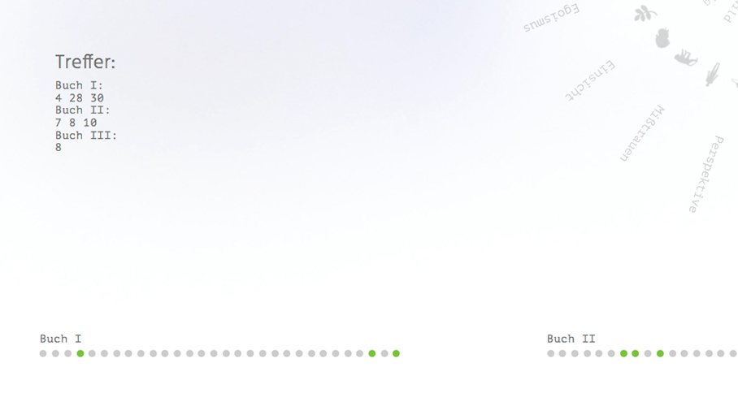
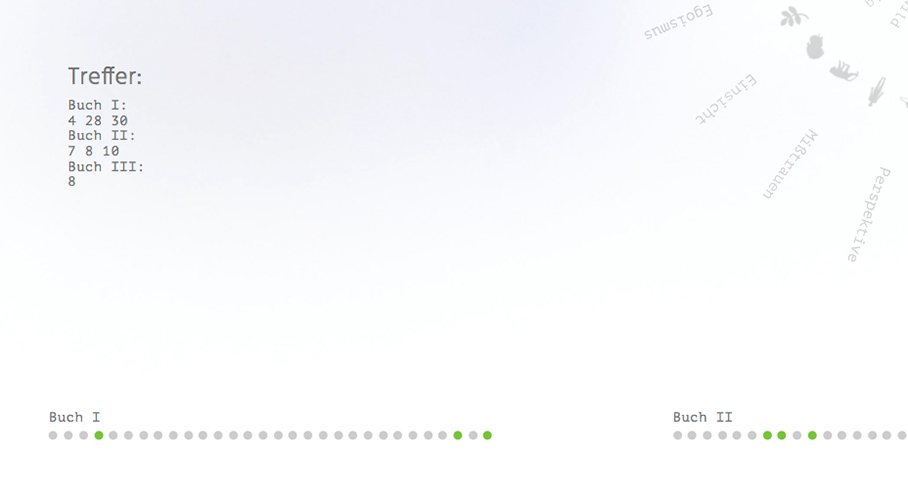

The FabelFinder is an associative Search-engine, alternatively introducing the fables of Lessings.
Three different access layers (theme - protagonist - feature) enable to discover within two clicks, if Lessing has ever written a fable with the theme „reverence“ and a donkey as protagonist. Moreover the information graphic build of the three circles gives an quick overview of the subjects and ethics mentioned by Lessing.
Although Lessings fables may be more than 300 years old it contains some lessons about humain interaction, witch never run out of validity.
The fables got sorted by themes, ethics and their main characters. Additionally the main characters were categorized by their features (funny, quick, intelligent etc.).
With this system its is possible to search a fable not only by their title (like one would do it in a book of Lessings fables) but also by their theme, protagonist and features of a protagonist. All of these three access layers can be used as as single filter or selective combination of all three possibilities.
At the end of every search the user finds the text of the fable chosen. If the choice fits more than one fable its marked below in a navigation bar representing Lessings books
Credits programming: Sebastian Reihs
Muthesius University of Fine Arts
Narrative Web
Supervised: Prof. Tom Duscher,
Summer Term 2017